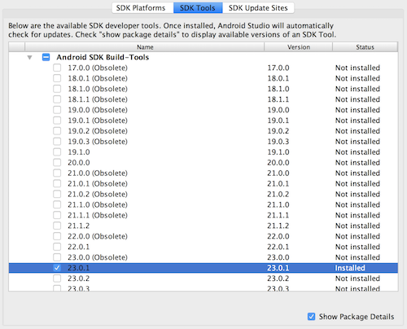

React Native 环境安装 iOS
基础开发环境环境安装：
brew install node
brew install watchman
yarn global add react-native-cli
# or
npm install -g react-native-cli
iOS 开发环境环境安装：
需要安装 XCode 版本大于 8
创建项目
使用 react-native 命令行工具创建项目
react-native init vultr-ping
创建 iOS 和 Android 项目
react-native eject
启动 iOS 开发
react-native run-ios
创建项目图标
brew install imagemagick
yarn global add yo generator-rn-toolbox
yo rn-toolbox:assets --icon icon.png
iOS 开发注意
-
iOS 开发只能使用 https 链接获取数据
-
iOS 开发网络链接库可以使用
XMLHttpRequest或者fetchAPI -
可以使用 Redux 库来管理状态，支持原生 JavaScript 库
-
*可以和 iOS 原生代码混合开发
Android 开发环境安装：
需要安装 Java SE 版本 8.0 以上
需要安装 Android SDK
需要安装 Android Stuido
brew cask install java
brea cask install android-sdk
brea cask install android-studio
React Native 需要配置环境变量
export ANDROID_HOME=$HOME/Library/Android/sdk
export PATH=$PATH:$ANDROID_HOME/tools
export PATH=$PATH:$ANDROID_HOME/platform-tools
Android Studio 需要配置 Android SDK

